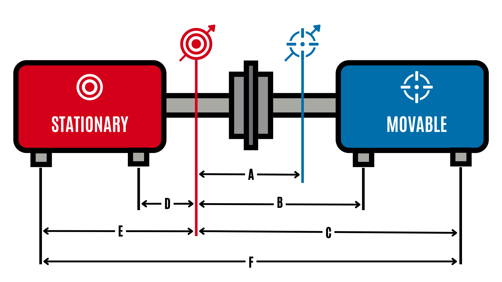

Complete Shaft Alignment Form
Fill out all dimensions and TIR readings to get instant results

📐 Machine Dimensions
inches
Dial separation
inches
Movable front feet
inches
Movable rear feet
inches
Stationary front feet
inches
Stationary rear feet
🎯 TIR Readings
Stationary
mils
1/2 TIR:
--
Movable
mils
1/2 TIR:
--
-1/2 TIR:
--
📊 Alignment Results
Enter all dimensions and TIR readings to see results